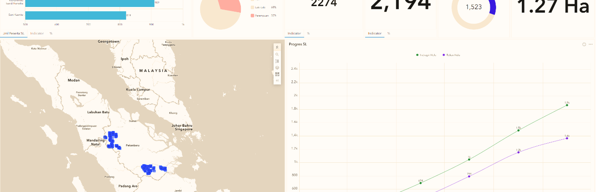
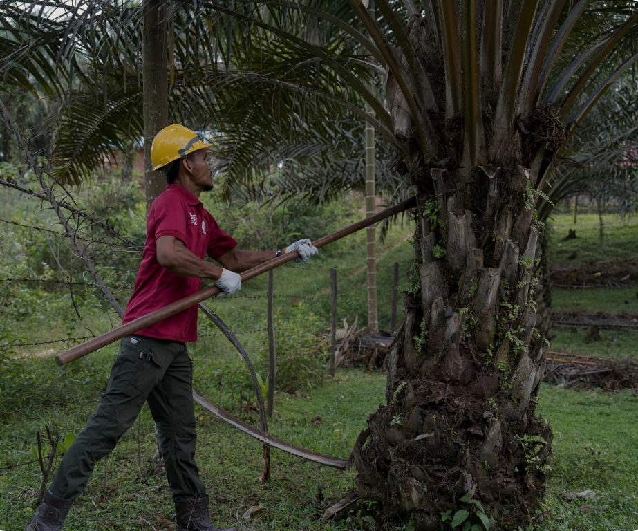

Tercapainya manajemen lahan yang lebih terinformasi
Meningkatnya pemahaman terkait batas lahan dan zonasi
Meningkatnya kejelasan dan ketelusuran lahan

Pemetaan Parsitipatif
Melibatkan petani untuk terlibat dalam kegiatan pemetaan. Kami mengembangkan dashboard untuk menggabungkan data petani dan perkebunan dalam satu alat yang terintegrasi, yang menjadikan lokasi, area pertanian, dan profil petani lebih mudah untuk di telusuri dan dipahami. Dashboard ini mendukung proses monitoring, perencanaan, dan pengambilan keputusan menjadi lebih baik.

2,901
FARMERS TRAINED
814 in Indragiri Hulu
993 in Rokan Hulu and Rokan Hilir
Equipping farmers across Riau with the knowledge and skills to adopt regenerative and sustainable practices.
"Dengan data pemetaan itu petani bisa mengakses bantuan dari pemerintah dan bahkan arahnya untuk mendirikan sebuah koperasi/ entitas/ asosiasi."
— Sahrul, Sumber Dadi
“Dulu saya hanya menebak batas kebun. Sekarang, hanya berbekal HP, saya bisa mengetahui zonasi kebun dan membedakan area yang aman dan zona merah. Kebun jadi lebih jelas dan lebih mudah dilindungi" — Sahrul, Sumber Dadi
."
"Through Farmer Field School, I learned practices that keep my farm productive while taking care of the soil." — Nama Petani 3, Kelompok Tani 3